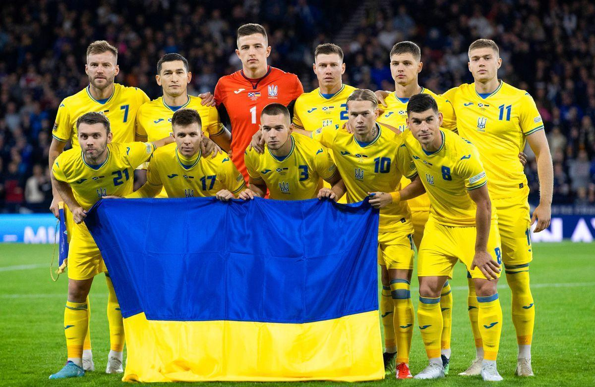

Футбол (від англ. football) — командний вид спорту, в який грають дві команди по одинадцять гравців зі сферичним м'ячем. Близько 250 мільйонів чоловіків і жінок із більш ніж 200 країн грають у футбол, що робить його найпопулярнішим у світі видом спорту. Футбол — олімпійський вид спорту. У футбол грають на прямокутному полі з воротами на кожному кінці. Мета гри полягає в тому, щоб забити м'яч у ворота протилежної команди. Гравцям не дозволено торкатися м'яча руками, поки він перебуває в грі, якщо вони не воротарі (і тільки тоді, коли він перебуває в їхньому штрафному майданчику), або під час укидання м'яча. Інші гравці здебільшого використовують свої ноги, щоб завдати вдару або передати м'яч, але можуть також використовувати голову і тулуб. Команда, яка забиває більше голів до кінця матчу — виграє його. Якщо жодна команда не забила м'яч, або рахунок однаковий, то оголошується нічия, або гра переходить у додатковий час, або пенальті, залежно від формату змагань. Закони гри спочатку були кодифіковані футбольною асоціацією Англії 1863 року, а згодом поширилися всією планетою. На всесвітньому рівні футболом керує Міжнародною федерацією футболу асоціації (FIFA; фр. Fédération Internationale de Football Association), яка організовує Кубок світу для чоловіків і жінок щочотири роки.
На фото зображена - Збірна Україна з футболу 2024
